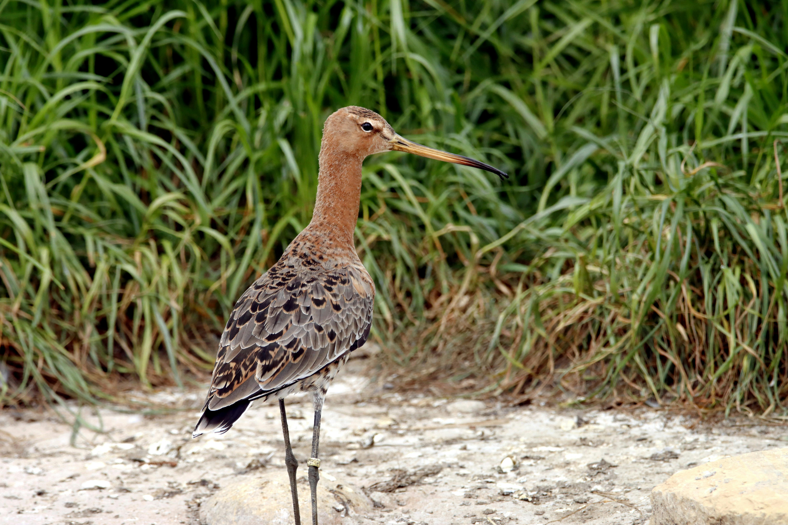

Quantum mechanics is a part of physics that studies how very tiny particles, like atoms and electrons, behave. Unlike larger objects, these particles can act like both particles and waves, which is really strange and different from what we see every day. It also includes ideas like particles being in multiple places at once (superposition) and being instantly connected even when far apart (entanglement). This field helps us understand and create things like computers and lasers.
Check out how it involves the different fields below:
Bio
Quantum biology studies processes in living organisms that defy classical physics, requiring quantum theory. Electrons and protons transfer within cells through energy exchanges, forming "open quantum systems" with unique laws. Quantum effects are evident in photosynthesis, respiration, vision, catalysis, olfaction, energy transfer, and magnetic field effects, such as electron and proton tunneling and superposition states. The aim is to develop a comprehensive model to explain these phenomena.
Physics
Researchers use quantum phenomena to develop technologies like laser pointers, GPS, MRI, and computer transistors, all reliant on quantum effects. These effects occur at tiny scales or near absolute zero because quantum objects lose their "quantumness" when interacting with their environment, transitioning to classical behavior.
Chem
Quantum chemistry encompasses the theoretical study of protons, neutrons, and electrons, focusing on electronic structure and molecular dynamics. Electronic structure examines the behavior of electrons in atoms and molecules to predict or explain their reactivity and properties, including ground, excited, and transition states during reactions. Molecular dynamics studies the physical motion and conformational space of atoms and molecules.
Birds of a feather, flock together
probably because they have a magnetic field sensor
The magnetic compass, a crucial component of birds' navigation, has puzzled scientists for decades. Recent research suggests that this compass relies on a remarkable phenomenon: quantum effects in molecules within birds' eyes. These molecules, called cryptochromes, form radical pairs sensitive to Earth's magnetic field. Experiments have shown that these radical pairs can be influenced by weak magnetic fields, supporting the idea that they play a role in avian magnetoreception. Moreover, studies on migratory birds, like the European Robin, have highlighted the importance of cryptochromes in their ability to navigate.

Migratory birds embark on awe-inspiring journeys across vast distances, guided by innate navigational skills. Although people have pondered over these feats for centuries, only recent advances in technology have unveiled the intricate mechanisms behind these migrations. Birds, like the Bar-tailed Godwit, inherit directional cues from their parents and rely on a sophisticated system of compasses. These compasses utilize celestial cues such as the position of the sun and stars, as well as Earth's magnetic field, enabling birds to navigate accurately even during their first migrations.
Despite significant progress, many questions remain unanswered. Scientists are still striving to confirm whether radical pairs form in birds' eyes and how they contribute to magnetic sensing. Behavioral experiments suggest that radio-frequency electromagnetic fields might interfere with birds' magnetic compasses, adding complexity to the puzzle. As researchers delve deeper into the mysteries of avian navigation, they uncover not only the secrets of migratory journeys but also the fascinating interplay between quantum physics and
biological systems.